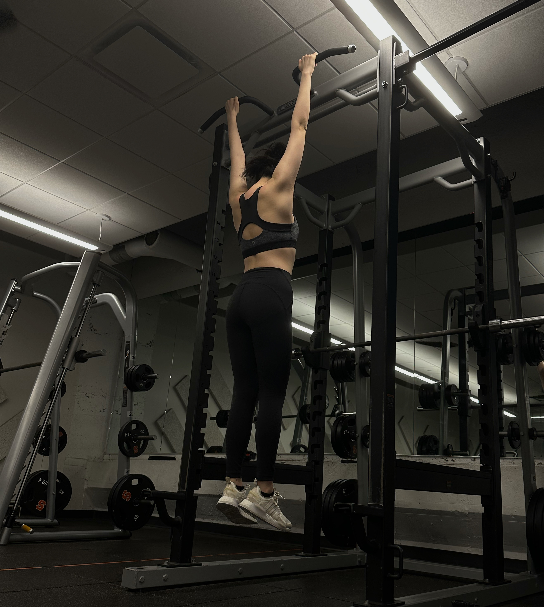
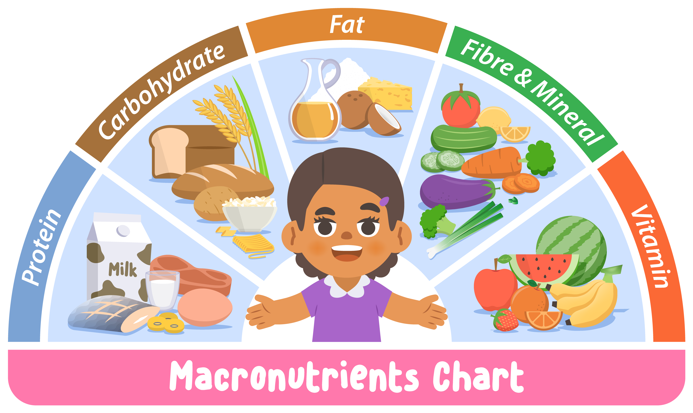

FitFuel
About Me
My name is Sabrina Gao. I am majoring in public relations and am interested in fashion, beauty, and entertainment fields. I am also minoring in information management and technology.
I was in Chattanooga, Tennessee for my high school. I was on the cross-country team for three years, and a soccer manager for 2 years. Also, because of this experience, I developed one of my hobbies: going to the gym.
I hope this website can help to build a basic knowledge of fitness and nutrition for people to improve their daily habits.
Nutrition
It focuses on the three main elements: carbohydrates, fats, and proteins.
It introduces healthy and delicious food recipes from around the world. Additionally, it provides tips for individuals interested in maintaining weight, losing weight, and gaining muscle.
Fitness
The part introduces the difference between aerobic and anaerobic exercises and helps you choose the best one to improve your health.
Additionally, it provides recommendations for my favorite sports YouTubers. Choose the one that best fits your needs!